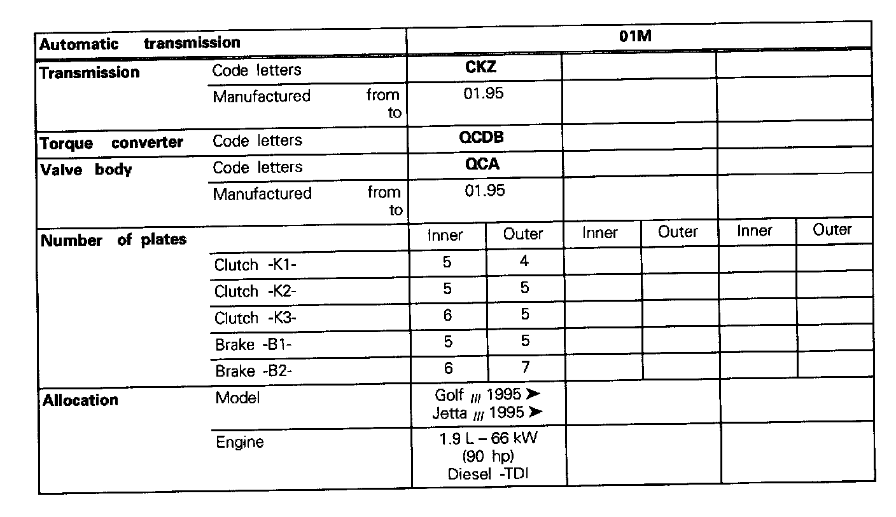
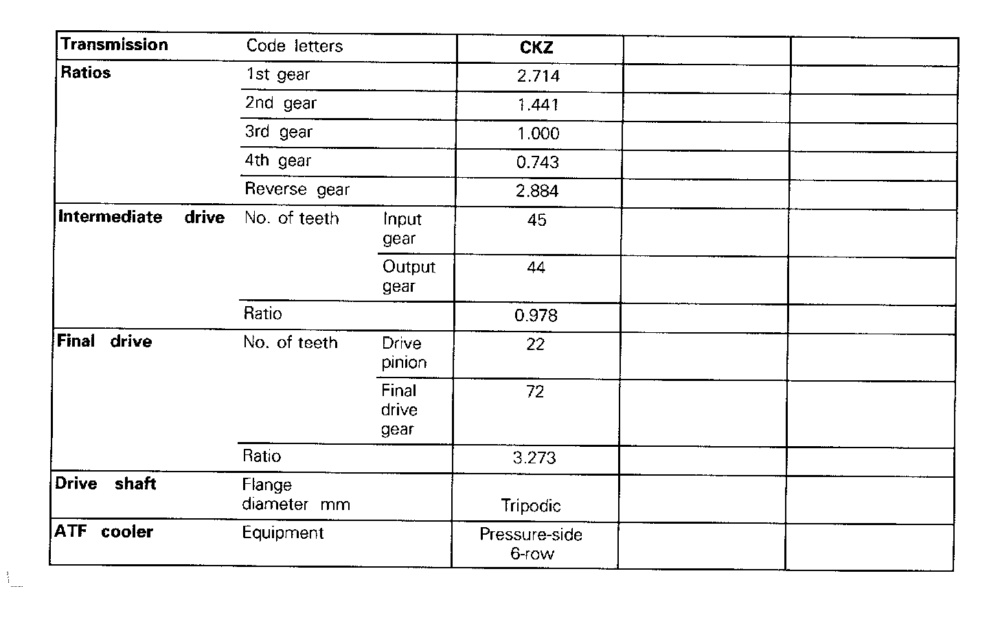
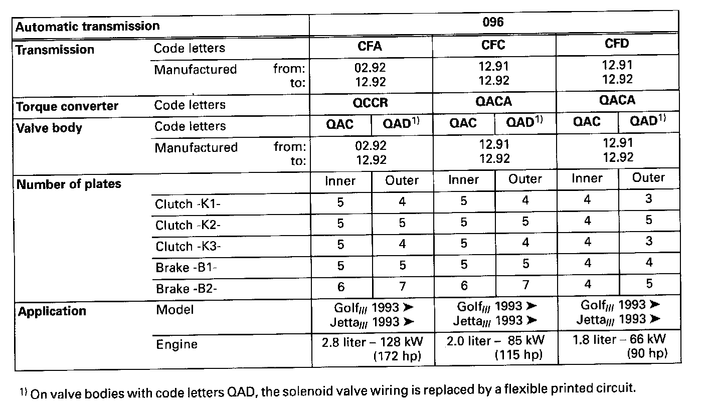
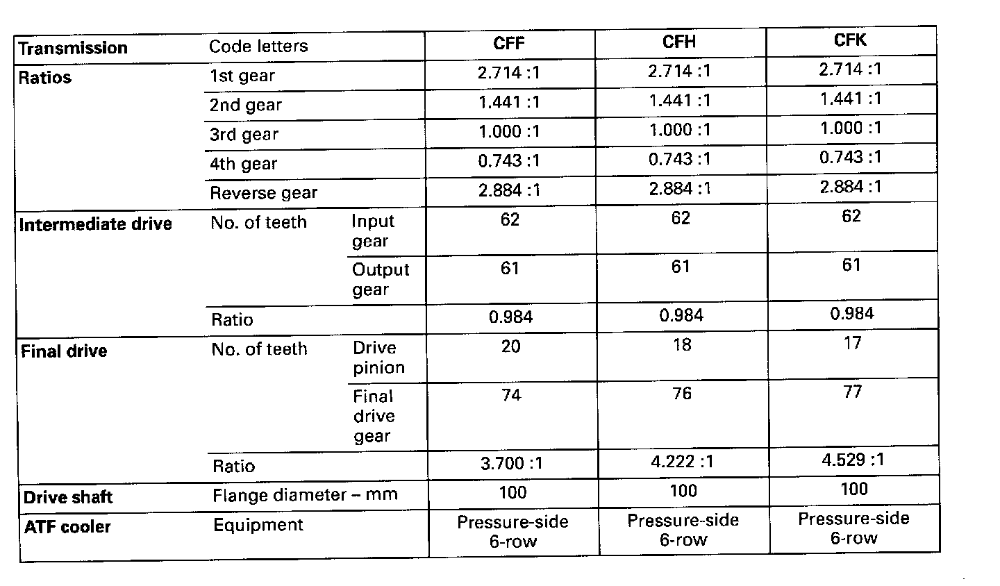
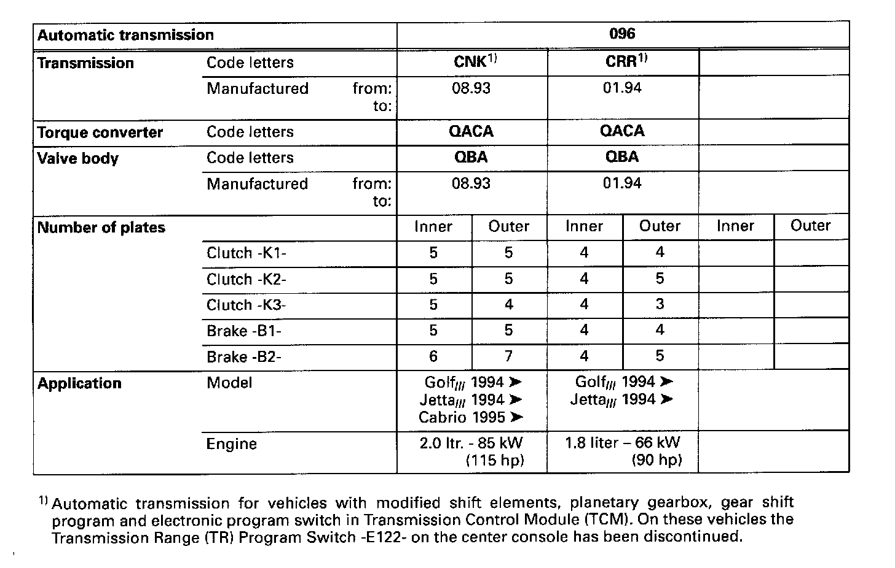
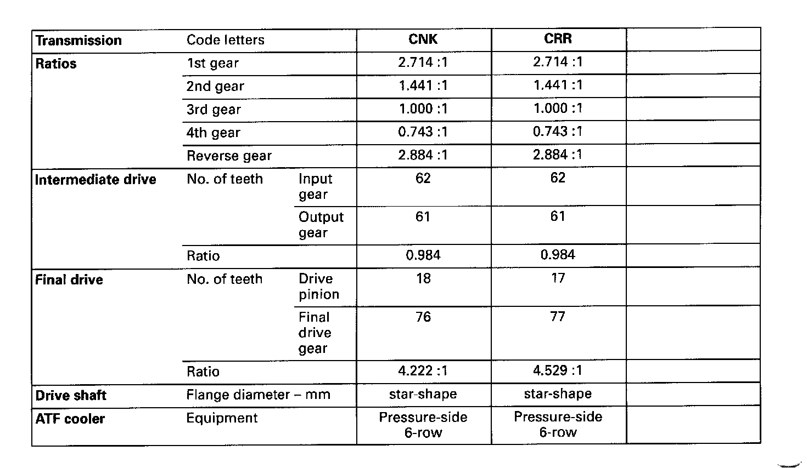

Technical Data
01M Transmission- Code Letters, Transmission Allocation, Ratios, Equipment -




096 Transmission
- Code Letters, Model/Engine Application, Ratios, Equipment -
- Transmissions for vehicles with Transmission Range (TR) Program Switch E112 -





